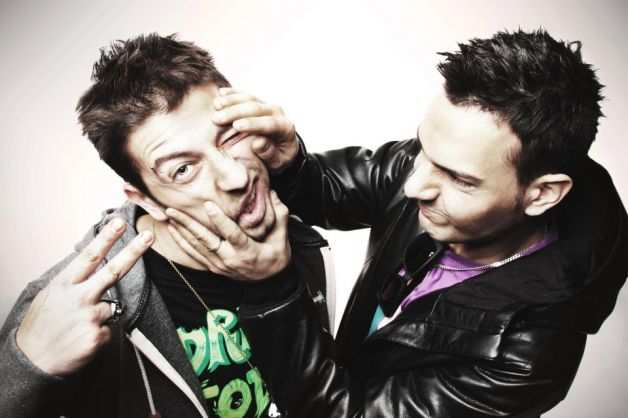
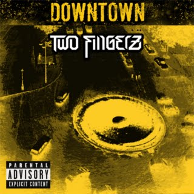
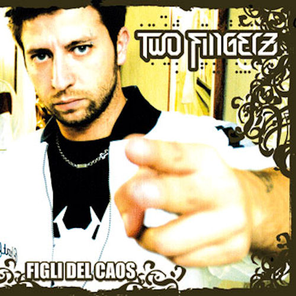
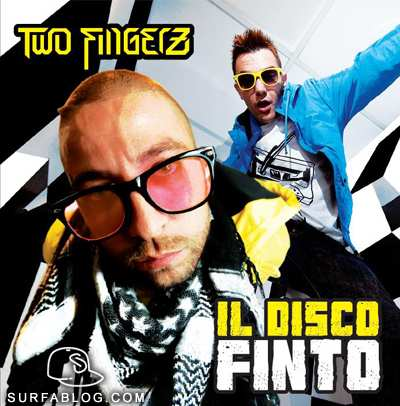
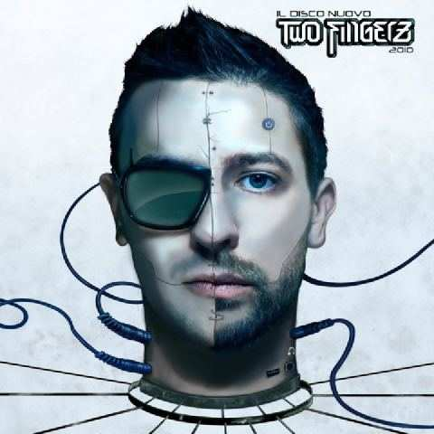
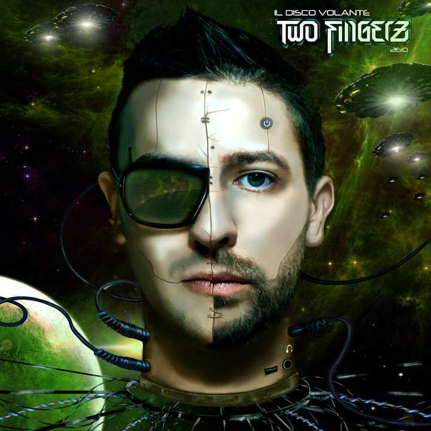
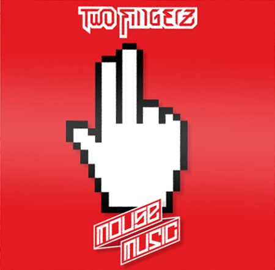
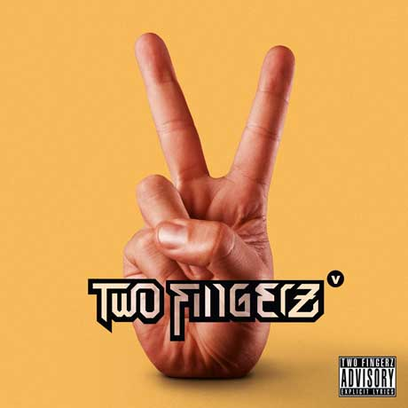

I Two Fingerz sono un duo italiano formato dal rapper e cantautore Danti (Daniele Lazzarin) (Desio, 20 settembre 1981) e dal produttore e beatmaker Roofio (Riccardo Garifo) (Seregno, 3 settembre 1981).
Storia del gruppo
Downtown e Figli del caos (2003-2007)
Il gruppo, formatosi nel 2003, da' alla luce il suo primo lavoro ufficiale nel 2006: si tratta di un LP intitolato Downtown, distribuito indipendentemente.
A distanza di un anno, i Two Fingerz ritornano con Figli del caos, album distribuito dalla Sony Music che e', pero', un insuccesso commerciale per il duo.
 
Storia Il disco finto e Il disco nuovo/Il disco volante (2009-2010)
Dopo una pausa di due anni, nel 2009 i Two Fingerz iniziano a collaborare con il rapper Vacca, realizzando insieme a lui l'album Non prima delle 6:10, pubblicato gratuitamente. Nel novembre del 2009, il duo pubblica l'album Il disco finto, che vanta le collaborazioni con Dargen D'Amico, Ensi, Nesli, Big Fish, Mondo Marcio, Ghemon e dello stesso Vacca.
Nel mese di dicembre 2010 i Two Fingerz pubblicano sotto etichetta indipendente il doppio album Il disco nuovo/Il disco volante, il quale contiene collaborazioni con Big Fish, MasterMaind, Simona Barbieri, Yves e Sewit Villa e Dargen D'Amico. Con questo album, il duo ha sperimentato un rap piu' electro (soprattutto in Il disco volante).
  
Mouse Music (2011-2012)
Dal primo marzo 2011 conducono Made in Italy - Two Fingerz sul canale Hip Hop TV di Sky, dove presentano diversi video hip hop e rap italiani. Dall'account ufficiale di e' stato annunciato il quinto album in studio dei Two Fingerz, intitolato Mouse Music e pubblicato il 29 maggio 2012. L'album e' stato anticipato ogni lunedi, a partire dal 2 aprile, da quattro videoclip con ospiti d'eccezione come annunciato sul loro sito. Mouse Music e' stato anticipato il 21 marzo anche dal mixtape Danti Punk, contenente featuring di Danti su strumentali dubstep, in free download sul sito ufficiale del rapper.
L'album ha debuttato al secondo posto della classifica italiana degli album, rimanendo in classifica per oltre un mese. Il 7 settembre viene pubblicato il videoclip di Capra (in collaborazione con Caparezza) mentre il 26 ottobre, in esclusiva sul sito di Radio Deejay, esce il video di Come le vie a NY.
Dal primo novembre 2012 i Two Fingerz conducono il "Two Fingerz Show", uno show televisivo su Hip Hop TV, mentre il 12 novembre viene pubblicato il mixtape Mouse Music Rmx Pack, composto da cinque tracce remixate da Simon de Jano e missato da Mastermaind.
I Two Fingerz hanno presenziato ai TRL Awards 2012 esibendosi sul palco con il brano Questa musica. Sono stati ospiti, insieme ai Powerfrancers, agli MTV Days 2012. Nel dicembre 2012 scrivono la canzone di Natale per Radio 105, sulla base di Come le vie a NY, Natale riciclato. Il 12 aprile 2013 viene pubblicato su YouTube il video di Burattino.

Two Fingerz V
L'11 febbraio 2013 esce Vaffancuba Pack, un pacchetto contenente 3 mashup e il singolo Vaffancuba. Nel giugno 2013 viene pubblicato "Iron Dan" un mixtape composto da dei featuring di Danti e dei remix. Il mixtape contiene il singolo "Rap un po' dance". Il 24 settembre 2013 si esibiscono al Mediolanum Forum di Assago, in occasione del quinto compleanno di Hip Hop TV. Il 28 ottobre 2013 esce Come me, singolo che anticipa l'EP di Danti e Mastermaind Special Delivery, in uscita l'11 novembre 2013. Dall'autunno 2013 la canzone dei Two Fingerz Barlamento e' sigla iniziale della trasmissione radiofonica di Radio 24 L'Italia s'e' desta.
Il 13 dicembre, i Two Fingerz annunciano il singolo La cassa dritta, realizzato insieme al rapper Fedez e pubblicato tre giorni piu' tardi sull'iTunes Store. Nello stesso giorno viene inoltre rivelato che sarebbe stato pubblicato un nuovo album nel mese di febbraio 2014, il cui titolo è Two Fingerz V.
L'album, pubblicato il 4 febbraio, ha debuttato al primo posto della classifica italiana degli album.

Per altre info
Torna all'indice